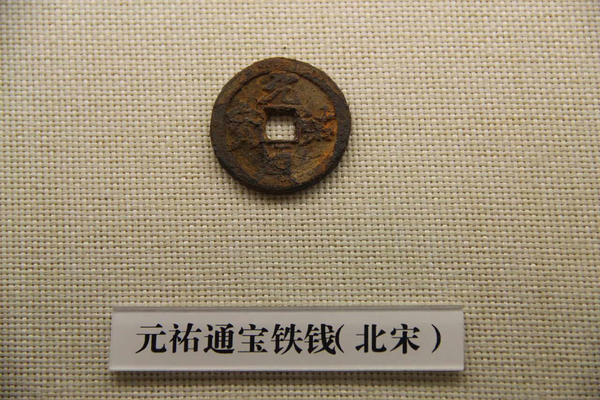

Opening the museum…
Eight rooms. A history of money in China.
Drag the object to rotate it.
Explore the same eight periods in the reading version.

New forms. Familiar questions.Who accepts it—and what makes it work?